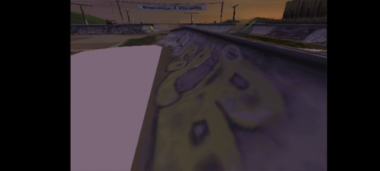
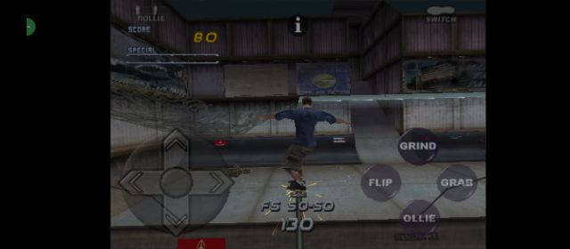
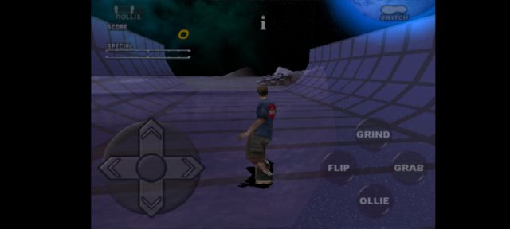
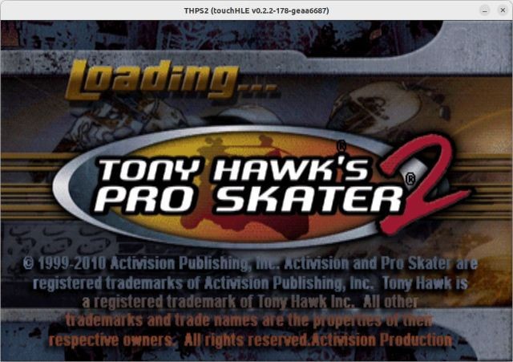
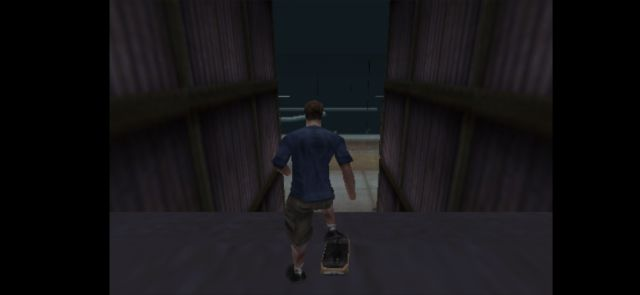
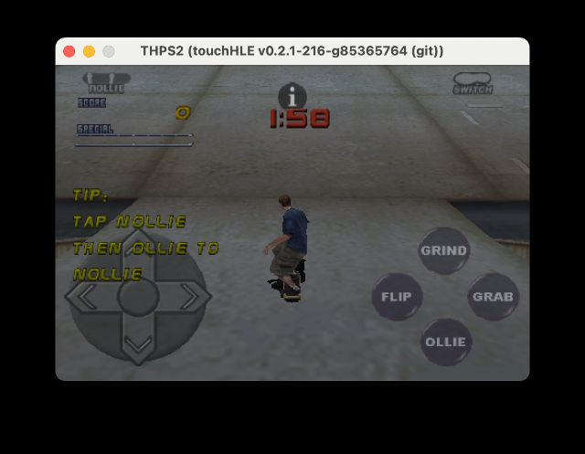

| App name | Tony Hawk's Pro Skater 2 |
|---|---|
| Release year | 2010 |
| Developer/Publisher | Activision |
| First reported | |
| First reported by | @AshthorneGaming |
| Version number | Display name | Bundle identifier | Minimum iOS version | Best rating | Last updated | First reported by | |
|---|---|---|---|---|---|---|---|
| 1.02 | THPS2 | com.activision.thps2 | 2.2.1 | ⭐️⭐️⭐️⭐️⭐️ | @nighto | ||
| 1.2.1 | THPS2 | com.activision.thps2 | 2.2.1 | ⭐️⭐️⭐️⭐️⭐️ | @AshthorneGaming |
| Version number | touchHLE version | Operating system | GPU | Scale hack supported? | Rating | Reported | Reported by | Remarks | Screenshot |
|---|---|---|---|---|---|---|---|---|---|
| 1.02 | 0.2.3 | Android (Moto G Stylus 2022) | Adreno | Didn't test | ⭐️⭐️⭐️ | @DidSomeoneSayPerfect | Game crashes at Marseille France and game models and controls start disappearing in and out | View | |
| 1.02 | 0.2.2 | Android 12 | Mali-G76 MC4 | Yes | ⭐️⭐️⭐️⭐️⭐️ | @atmgameplays | No problems, game fully works as the touch too | View | |
| 1.02 | v0.2.2 | Android 12 | Adreno | Yes | ⭐️⭐️⭐️⭐️⭐️ | @thundergun1 | Skate Heaven and Chopper Drop can be unlocked if 100% save file from PC version is copied over to sandbox folder | View | |
| 1.2.1 | v0.2.2-177-gec7ba5e | Ubuntu 22.04 | Intel UHD Graphics 620 | Yes | ⭐️⭐️⭐️⭐️⭐️ | @nighto | This version is also playing fine. | View | |
| 1.02 | 0.2.2 | Android 11 | Adreno | Didn't test | ⭐️⭐️⭐️⭐️ | @R3Zed78 | When in the game always lags and has a small glitch | View | |
| 1.02 | v0.2.1-216-g85365764 | macOS Sonoma 14.4.1 | Apple M1 GPU | Yes | ⭐️⭐️⭐️⭐️⭐️ | @ciciplusplus | View | ||
| 1.02 | v0.2.1-86-g8a0ac45 | Windows 11 | NVIDIA Quadro T2000 | Yes | ⭐️⭐️⭐️ | @nighto | Opening the ipa tops the processor. If you unzip the ipa and open the .app folder it opens with no sound / music. | ||
| 1.2.1 | v0.2.1 | Windows 10 | NVIDIA GeForce RTX 4070 | Couldn't test | ⭐️ | @AshthorneGaming | Crashes at "thread 'main' panicked at 'not implemented: Format character '1'. Formatted up to index 11', src\libc\stdio\printf.rs:173:18" |
| Rating | Description |
|---|---|
| ⭐️ | Completely broken: app crashes immediately without any user interaction. |
| ⭐️⭐️ | Only (part of) the main menu, intro or similar is working. |
| ⭐️⭐️⭐️ | Some of the main content of the app works, but with major issues. |
| ⭐️⭐️⭐️⭐️ | The main content of the app works (e.g. entire game is playable) with only small issues. |
| ⭐️⭐️⭐️⭐️⭐️ | Everything works. The app is fully usable. |





